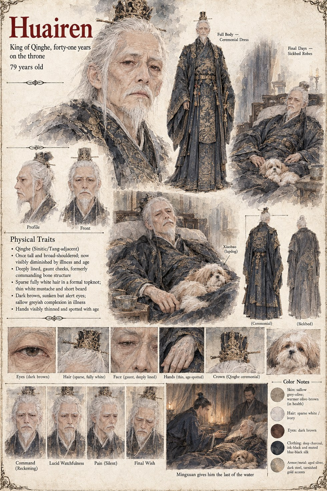

Huairen
King of Qinghe · forty-one years on the throne · 79 years old
King of Qinghe for forty-one years, and by the novel's opening already visibly diminished by an illness that turns out, far too late for anyone to act on it, to be Cao's own slow, measured dosing rather than age alone. He keeps Xiaobao curled against him through most of his final months, and it is the dog's own fear of a familiar step that eventually hands Mingxuan the pattern no human witness would give him.
Whatever he comes to understand about Queen Meilan, Prince Huaiyu, and the true parentage of the son the Father's Reckoning has already made legally his own, he takes the last sip of the Listening Water from Mingxuan's own hand and spends it not on confrontation but on a final instruction, delivered to the room rather than to any one person in it: tell them the boy is loved, and tell them nothing else.
“Tell them the boy is loved. Tell them nothing else.”